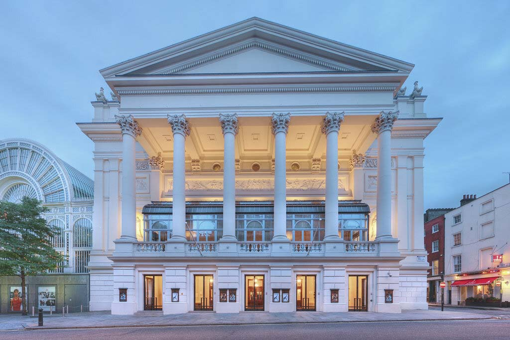
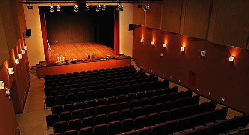

O Teatro São João, localizado no coração de Joinville-SC, é um dos marcos culturais mais importantes da cidade. Fundado em 1950, o teatro tem sido um palco central para a cultura e as artes, oferecendo uma programação diversificada que inclui óperas, peças teatrais, concertos e eventos comunitários.
Teatro São João
História e Localização

Estrutura e Acessibilidade
O Teatro São João possui duas salas principais:
- Sala dos Príncipes: Com capacidade para 750 espectadores, esta é a sala principal do teatro. Conhecida por sua acústica impecável e arquitetura deslumbrante, a Sala dos Príncipes é o local preferido para grandes apresentações e eventos de gala.
- Sala das Bicicletas: Com capacidade para 320 lugares, esta sala é ideal para eventos menores, palestras e workshops. Seu nome é uma homenagem à tradição de Joinville como a Cidade das Bicicletas.
O Teatro São João orgulha-se de ser totalmente acessível. As rampas de acesso permitem que pessoas com deficiência (PCDs) possam se locomover de maneira segura e confortável por todas as áreas do teatro, garantindo uma experiência inclusiva para todos os visitantes.
Instituições no Prédio
Além das salas de espetáculo, o Teatro São João abriga duas instituições educacionais de destaque:
- Escola de Costura Cênica “Agulhas de Ouro”: Esta escola é dedicada à formação de profissionais na arte da costura cênica, oferecendo cursos que abrangem desde a confecção de figurinos até a criação de cenários. A Escola “Agulhas de Ouro” é reconhecida por seu compromisso com a excelência e a inovação na moda teatral.
- Conservatório Municipal de Música: O conservatório oferece uma ampla gama de cursos de música, desde iniciação musical para crianças até cursos avançados para músicos profissionais. Com aulas de instrumentos, teoria musical e prática de conjunto, o Conservatório Municipal de Música é um centro vital para a educação musical em Joinville.
Compromisso com a Cultura
O Teatro São João é um ponto de encontro para a comunidade artística de Joinville e região, promovendo a cultura e incentivando novas gerações a se envolverem com as artes. Com uma programação rica e variada, o teatro continua a ser um farol de cultura e educação, comprometido com a acessibilidade e a inclusão.
Visite o Teatro São João e descubra a magia das artes no centro de Joinville-SC.
Localização
Pela sua localização no centro da cidade de Joinville - e pela proximidade do terminal central de ônibus urbanos - o Teatro São João tem fácil acesso a quem vem de qualquer bairro da cidade.
Nossos visiantes também podem contar com os diversos estacionamentos conveniados nos arredores do Teatro, para guardar seus veículos com comodidade e segurança.
Visite o Teatro São João e descubra a magia das artes no centro de Joinville-SC.